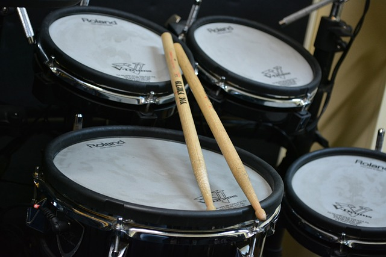

L'association Arts et Zik existe depuis de nombreuses années sur la commune de Plouvorn.
L'association Arts et Zik propose :

- des cours collectifs de dessin et de peinture avec Christophe Coat à l'Atelier. Pour les adultes, les cours se déroulent le lundi soir de 20h à 22h. Pour les enfants, deux créneaux sont proposés : le lundi de 16h45 à 18h00 ou le mercredi de 10h30 à 12h00. Pour les adolescents, les cours ont lieu le samedi matin, un groupe de 9h00 à 10h30 et le second groupe de 10h30 à 12h00
- 
- des cours individuels de batterie les lundis, mercredis et jeudis avec Guy Plantec à l'Espace culturel du plan d'eau

- des cours individuels de piano le mercredi avec Claire Combot à l'Espace culturel du plan d'eau

- Claire Combot dirige également un groupe vocal : Les Zélés du vocal, le mardi de 20h15 à 22h00 à l'Espace culturel du plan d'eau.